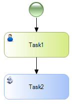
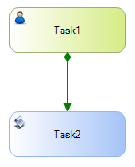
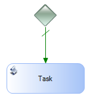
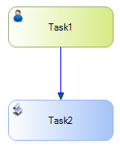
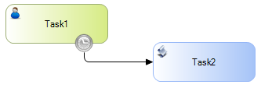
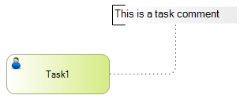

Connectors join two elements on a diagram, and in some cases, they indicate the order of precedence of these elements. There are 3 basic types of connectors in BPMN: Sequence Flow (they define the order of elements on a diagram), Message Flow (they define the flow of communication between two participants or entities) and Associations, which allow connecting an artifact with an element on a diagram. In GeneXus there are 6 types of connectors: 1) Sequence Flow – As in the BPMN standard, in GeneXus the sequence flow is represented with a solid black line with a solid arrow-head and it is used to show the order (sequence) in which the different activities will be run in the Process. Its Type property is set to Fixed, which is the default value. 
2) Conditional Flow – The Conditional Flow is represented with a solid green line with a solid arrow head. When it is the outgoing sequence flow of an activity, the beginning of the line is represented with a mini-diamond. On the other hand, if it is the outgoing flow of a gate, the diamond is not used because the flow type is implicit. A conditional flow is associated with a conditional rule that is evaluated at runtime to determine if this flow must continue or not. It is set by editing the Type property and selecting the Conditional value. 
3) Default Flow – This flow is used in exclusive or inclusive gateways to model which outgoing flow must continue, when the other outgoing conditional flows don’t evaluate to true at runtime. It is represented with a hatch mark near its beginning. It is set by editing the ConditionType property and selecting the Default value. Since they are outgoing flows, their color is green. 
4) Optional Flow – The optional flow is used to define that the user will choose a path for the flow to continue at runtime. It is represented with a blue line, with a solid arrow head. It is set by editing the Type property and selecting the Conditional value. 
5) Exceptional Flow – They are outgoing flows of an intermediate event associated with a task. In functional terms, they are sequential flows. 
6) Association – Similarly to the BPMN element, an association is used to associate data, text and other artifacts with the elements on the diagram. Just like in BPMN, in GeneXus an association is represented with a black dotted line, with no arrow head. 
Go to the main article - Return to the previous section - Go to the next section
|
| Backlinks | ||
| Toc:GeneXus BPM Suite | Introduction to BPMN | |
| Introduction to BPMN - Artifacts | Introduction to BPMN - Error Handling | Model Automation |